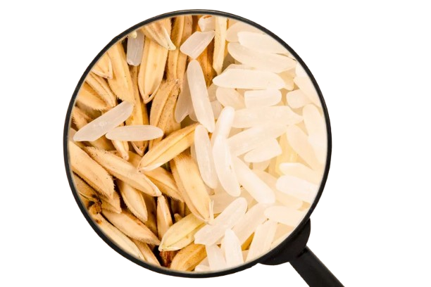

El cereal integral es rico en vitaminas del grupo B, vitamina E y elementos fitoquímicos. Estos últimos no son propiamente nutrientes, pero son muy interesantes, ya que desempeñan una función preventiva frente a determinadas enfermedades, e incrementan nuestro nivel de salud y confort. Entre los más activos se encuentra los compuestos fenólicos, los fitoestrógenos y el ácido fítico.Además, el cereal integral contiene bastante almidón, que proporciona energía a nuestras células. También posee una importante cantidad de proteína vegetal, que nos ayuda a equilibrar la balanza hacia el lado no animal de la proteína, más saludable en general porque no va ligada a la presencia de grasas perjudiciales. Hay que destacar también la cubierta externa del cereal, caracterizada por su elevado contenido en fibra dietética. La fibra es la parte de los alimentos de origen vegetal que nuestro sistema digestivo no puede digerir. A pesar de que las recomendaciones de consumo de fibra van aumentando conforme pasa el tiempo y se descubren sus múltiples beneficios actualmente se sitúan alrededor de 30 g fibra/día el consumo real de fibra en España no alcanza estas cifras ni por asomo (18 g fibra/día). La cantidad de calcio, magnesio o potasio es también considerablemente más elevada en los alimentos integrales que en los refinados.Como conclusión, la calidad y cantidad de nutrientes y otros componentes del cereal integral lo convierten en un aliado, no solo para la mejora de la calidad de la dieta, sino como preventivo de muchas enfermedades.
Martina Ferrando - Instituto Vision Tecnologica